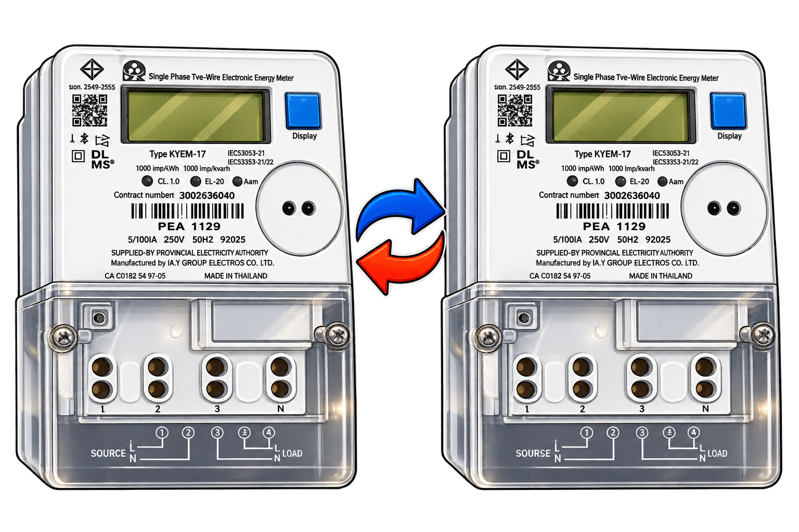

แอดมิน
นำทางงาน (
0
)

ระบบรับ-ส่งงาน เปลี่ยนมิเตอร์
PEA Smart Operation System
ส่งงาน ส.ป.มิเตอร์
สถานะใบงาน
รูปแบบการส่งงาน:
1. จากใบงาน UCUBE
2. ส.ป.มิเตอร์ ทั่วไป
เลือกเดือน (แผ่นงาน):
ค้นหาใบงาน:
ค้นหา
บันทึกส่งงาน
สถานะ:
ทั้งหมด
งานคงเหลือ
ผรม. ส่งงานแล้ว
พนง. ดำเนินการ
เสร็จสมบูรณ์
ประจำเดือน:
ใบงานทั้งหมด
0
คงเหลือ
0
เสร็จสมบูรณ์
0
ผรม. ส่งงาน
0
พนง. ส่งงาน
0
ตรวจสอบข้อมูลเพื่อปิดใบสั่ง
รายละเอียดข้อมูล
Export Excel
เข้าสู่ระบบ Admin
กรุณาระบุรหัสผ่านผู้ดูแลระบบ:
รหัสผ่านไม่ถูกต้องครับ